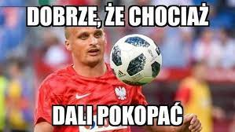

Autor: Krystian Pedro
Pierwsza rewolucja to przyjście Paulo Sousy, tzw "Siwego Bajeranta", który miał być samolotem do Mistrzostw Świata, ale odleciał szybko do Portugali
afery z fryzjerem, polska myśl techniczna, Czesio płaczek, a na MŚ gra jak Katar z nosa, czyli do d*py.
Jedyne co sie zmieniło za jego kadencji, to wiece petów na murawie, razem z naszym Lewym dryblerem
Czwarta rewolucja trenerska, kto następny?
Podsumowując to wszystko: -> nie ważne skąd nie ważne jak, nasza reprezantacja będzie ch**a grać; -> mozę Lewandowski powinien zostać budowlańcem, czuł by sie lepiej na meczu z Wyspami Owczymi; -
Przedstawiona wyżej krótka informacja na temat naszej jakże słabej reprezentacji pochodzi z każdej możliwej strony fanatyków futbolu:
Wikipedia
Rewolucja kadrowa
Copyright 2018